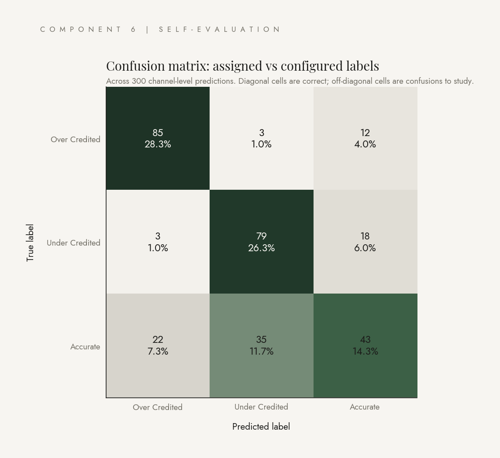
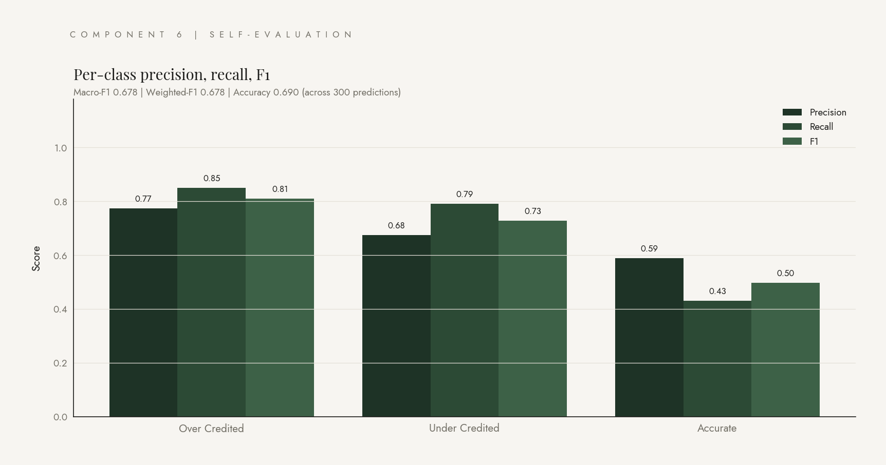
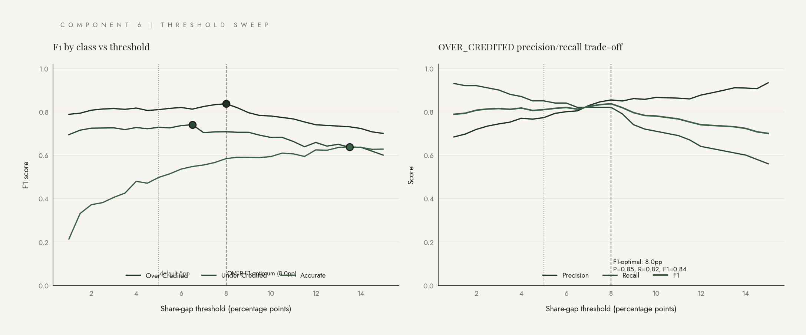
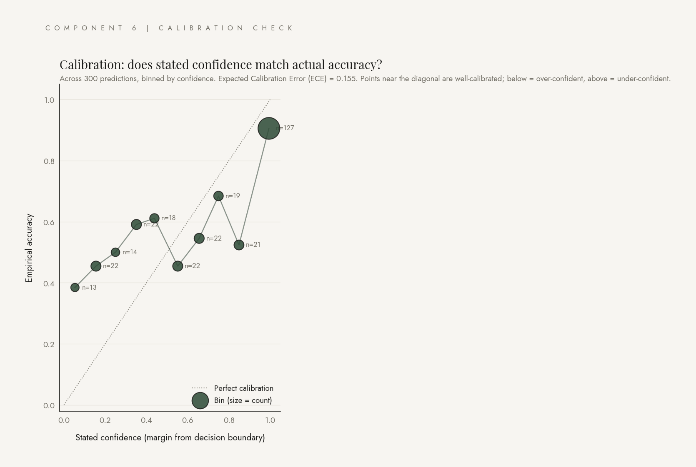

The validator, validated.
Precision, recall, F1, threshold sweep, calibration, and Claude grading Claude. The discipline most attribution work skips, borrowed from how clause classifiers are graded in legal AI.
Marketing teams almost never apply classification metrics to attribution decisions. Attribution outputs look continuous, like credit shares, not categorical. But the decisions this system outputs are categorical: over-credited, under-credited, or accurate. So we should grade them the same way we grade any classifier.
What you are looking at on this page is the validator, validated. The confusion matrix shows where the system's labels match the configured ground truth, and where they confuse. The threshold sweep shows where the F1-optimal cutoff is. The calibration check tells us whether the system's stated confidence matches its empirical accuracy. The narrative evaluation has Claude grade Claude on whether the executive summary's claims are consistent with the comparison data.
This page is the methodological discipline most attribution work skips, and it is the single strongest interview moment in the project. The framing is borrowed from how clause classifiers are evaluated in legal AI, applied to a domain that does not usually receive it.
Per-class precision, recall, F1
50 simulations × 6 channels = 300 predictions. Configured labels stay constant; engine predictions vary with measurement noise. Approximately 100 predictions per class.


Three observations. Recall on actionable classes is high (0.85 on OVER, 0.79 on UNDER), so when there is real misallocation the system catches it. OVER and UNDER almost never get confused with each other (3 of 100 in each direction), so the system never tells you to cut a channel that should be expanded. The weakness is on ACCURATE recall (0.43), which the threshold sweep below addresses.
Threshold sweep
The 5pp default for the truth-check is an educated guess. Sweeping it in 0.5pp steps across [1pp, 15pp] and recomputing F1 at each candidate shows where the optimum lives per class.

Calibration check
When the system says it is confident in a label, is it actually right that often? Confidence is defined as the margin from the decision boundary. Expected Calibration Error (ECE) is the bin-size-weighted mean absolute gap between stated confidence and empirical accuracy.

LLM-grades-LLM narrative evaluation
Take the executive summary from the narrative page. Structure the comparison data as ground truth. Have Claude grade Claude on whether the narrative's claims are consistent. Per channel labeled OVER or UNDER, the grader returns three booleans: was the channel mentioned, was the direction correctly stated, were the cited numbers within tolerance.
18 channel-level evaluations across 5 simulated runs. Two honest caveats: small N (with 50 evaluations we would likely find some failures, particularly on magnitude) and same-family LLM judging itself (the grader is also Opus 4.7; a rigorous follow-up uses a different judge family). Even with the caveats, 100% on direction correctness is a real signal: the prompt structure forces the writer to ground numeric claims in the input data.
What I would change at enterprise scale
- Real data inputs. Replace the synthetic data source with warehouse connectors (Snowflake or Teradata). The interface stays the same; the implementation changes.
- Attribution model integration. Pull the existing model's outputs from the warehouse and feed them in alongside measurement.
- Real geo-experiments. Pull experiment metadata from Eppo or Statsig (or an internal tool) so geo-tests are real holdouts, not synthetic dark periods.
- Single-channel synthetic control in src/methods/synthetic_control.py. Tighter per-channel magnitudes than multi-channel TWFE.
- Larger-N evaluation runs. 200+ simulations for production-grade P/R/F1 numbers. With out-of-family judges (Sonnet, or non-Anthropic), the narrative eval becomes rigorous.
- Output destinations and audit logging. The narrative report auto-delivers to a Confluence page, a Slack channel, or an email distribution list. Every recalibration recommendation gets an audit trail.